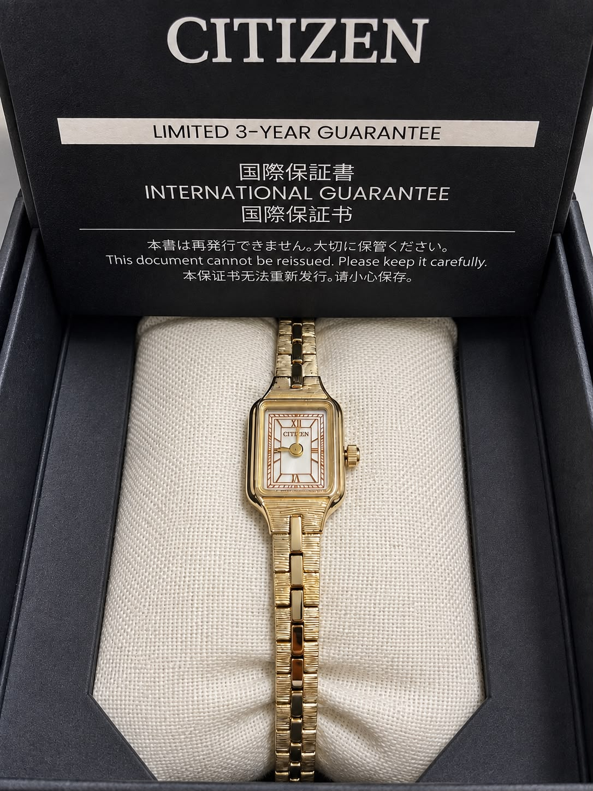

Japan Find · Sourced to Order
CITIZEN × HIROB Exclusive Kii
Eco-Drive Watch · Yellow Gold
Model EG2042-50B
¥35,800
Request this itemA special edition of CITIZEN's delicate Kii watch, created exclusively for HIROB, a Japan-based watch and vintage accessories boutique operated by BAYCREW'S.
This exclusive edition features a specially designed dial with Roman numerals and bar markers, paired with a softly muted yellow-gold finish developed for an understated, antique-inspired appearance.
Powered by CITIZEN Eco-Drive, the watch charges from light and does not require regular battery replacement.
Product Details
- CITIZEN Kii
- CITIZEN × HIROB Exclusive
- Model EG2042-50B
- Yellow-gold finish
- Stainless steel case and bracelet with gold plating
- Crystal glass
- Eco-Drive Cal. G620
- Light-powered movement
- Approx. 8-month operation when fully charged
- Accuracy: ±15 seconds/month
- 5 ATM water resistance
- Approx. 23 × 13 mm case
- 6 mm bracelet width
- Approx. 18 cm inner circumference
- Approx. 23 g
Sourcing & Availability
The listed price includes our sourcing and handling service.
This item is purchased from a retailer in Japan after your order is confirmed and is subject to retailer availability at the time of sourcing.
International Orders
International shipping is charged separately.
Any customs duties, import taxes, clearance fees, or other charges imposed by the destination country are the recipient's responsibility.
Warranty
Official warranty documentation supplied with the watch at the time of purchase will be included.
Warranty terms applicable to the sourced unit will be confirmed with the purchase documentation.